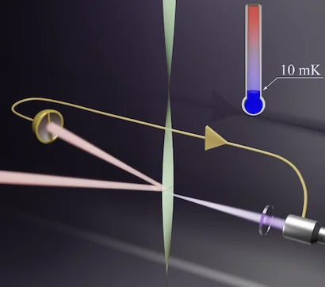

Laser cooling a centimeter-scale torsion pendulum
Torsion pendula have long been the instrument of choice for measuring weak gravitational forces, and they keep a high mechanical quality factor even when mass-loaded. We laser-cooled a centimeter-scale torsional oscillator from room temperature to 10 mK, an average occupancy of 6000 phonons, using radiation-pressure forces conditioned on a quantum-noise-limited optical measurement.
The readout is a “mirrored” optical lever that passively rejects spatial-mode noise by 60 dB, reaching an imprecision 9.8 dB below the peak zero-point motion. Together with a mechanical quality factor of 1.4 × 107, this demonstrates the ingredients needed to reach the quantum ground state of torsional motion.
D.-C. Shin, T. M. Hayward, D. Fife, R. Menon, V. Sudhir · Optica 12, 473 (2025)